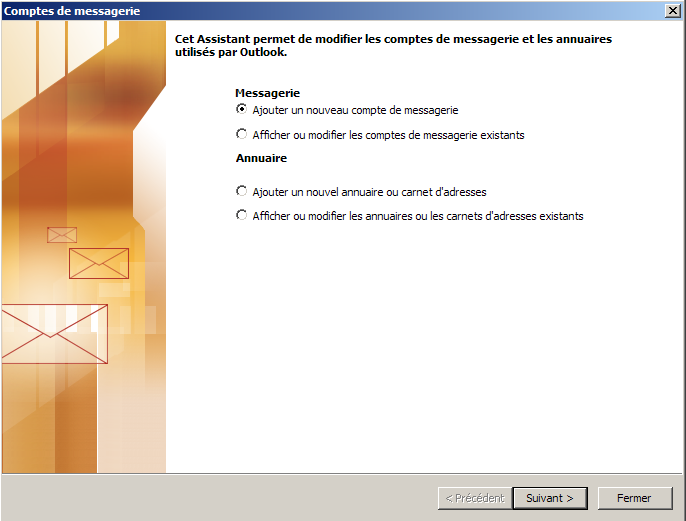
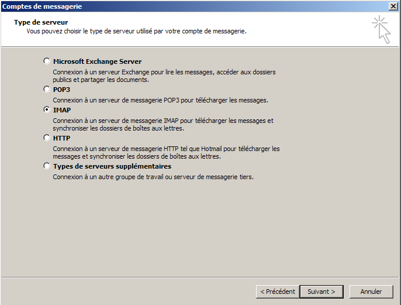
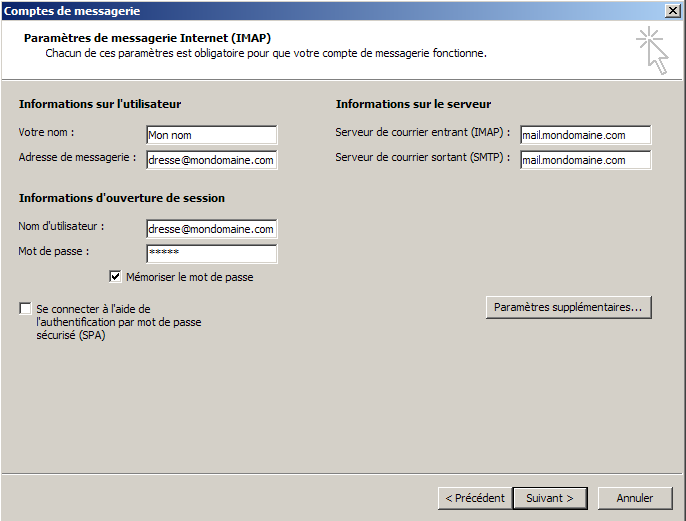
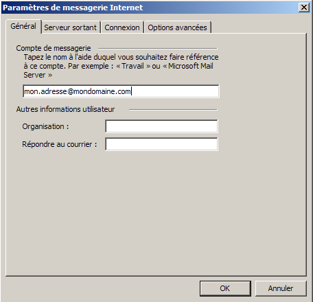
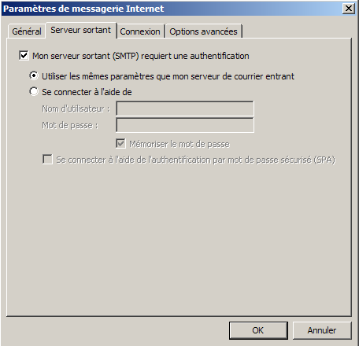
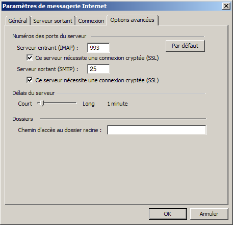
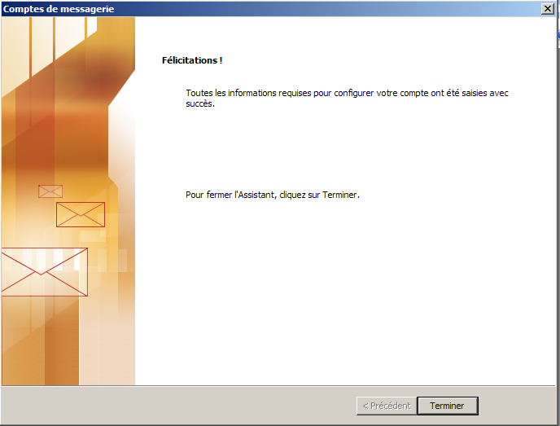

Configuration du client email Outlook.Information de base de notre compte d'exemple :
Adresse email : "mon.adresse@mondomaine.com" Configuration d'Outlook : Exécutez Outlook. Une nouvelle fenêtre apparaît :  Sélectionnez "Ajouter un nouveau compte de messagerie", puis "Suivant >". Une nouvelle fenêtre apparaît :  Sélectionnez "IMAP", puis cliquez sur "Suivant >". Une nouvelle fenêtre apparaît :  Lorsque l'on compose un email, l'adresse d'envoie se fait sous la forme : "Nom <adresse@email>". Pour le champ "Votre nom :" mettre "Mon nom". Le contenu de ce champ n'a pas d'importance, mais Outlook a besoin d'une configuration pour pouvoir continuer. Pour le champ "Adresse de messagerie :" mettre "mon.adresse@mondomaine.com". Pour le champ "Serveur de courrier entrant (IMAP) :" mettre "mail.bearstech.com". Pour le champ "Serveur de courrier sortant (SMTP) :" mettre "mail.bearstech.com". Pour le champ "Nom d'utilisateur" mettre "mon.adresse@mondomaine.com". Pour passer à l'étape suivante, cliquez sur "Paramètres supplémentaires...". Une nouvelle fenêtre apparaît :  Pour le champ "Compte de messagerie" mettre "mon.adresse@mondomaine.com". Pour le champ "Adresse de messagerie" mettre "mon.adresse@mondomaine.com". Pour passer à l'étape suivante, cliquez sur "Serveur sortant". Une nouvelle fenêtre apparaît :  Cochez la case "Mon server sortant (SMTP) requiert une autentification" et sélectionnez "Utiliser les mêmes paramètres que mon serveur de courrier entrant". Pour passer à l'étape suivante, cliquez sur "Options avancées". Une nouvelle fenêtre apparaît :  Cochez les deux cases "Ce serveur nécessite une connexion sécurisée (SSL)" et mettez "465" pour "Courrier sortant (SMTP)". Outlook est finalement configuré pour l'adresse email "Mon nom <mon.adresse@mondomaine.com>" et ce en connexion sécurisée. Cliquez sur le bouton "OK" sité en bas de la fenêtre de dialogue. Une nouvelle fenêtre apparaît :  Pour terminer, cliquez sur le bouton "Terminer". |